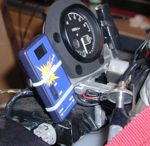
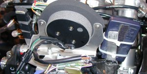
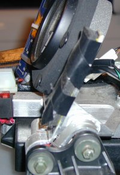
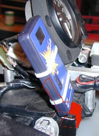
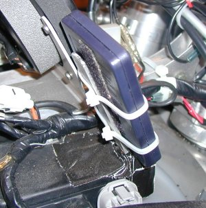
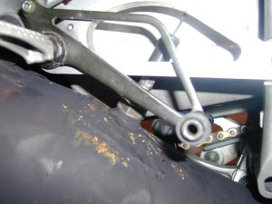
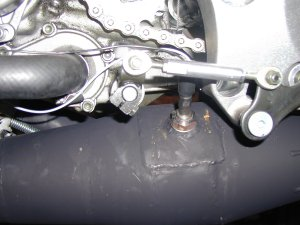

This page has some pictures to give a few ideas of how to mount the SpeedTune on your motorcycle.
Two brackets are pictured here. The unused one (right, as you sit on
the bike) was blocked by the brake reservoir, so I used the right side which
allows unobstructed view. It does not take much to hold the SpeedTune (2
zip ties). This also allows easy removal to check/replace the battery.

Rear view.

The right bracket uses a simple "S" type bend around the mounting
point for the power valve controller. A small loop of safety wire holds
the bracket on the "right" side, and some more wire looped around the
"left" side helps to "pinch" the whole assembly
together. A little foam made the speed tune sit nicely and a couple zip
ties were used to hold the SpeedTune.

My current bracket (outlined in red) has a few simple bends in it to wrap
around the CDI. It's held on entirely by duct tape! I'm sure some
adhesives might work too, but this assembly was used the entire 2000 AMA season
and is showing no signs of wear.


Installation in the pipe is relatively easy, but should be done by a qualified welder. My sensors were originally brazed on the pipe and it did not hold. You can see the square "patch" that was welded on the pipe and around the threaded fitting the sensor screws into. Have the sensor welded professionally.

